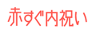

赤すぐ内祝い
Uchiiwai.UI.*: a part of Recruit Web Service UI Library
概要
赤すぐ内祝い WEBサービスを活用したサイトを構築する際、便利に使えるユーザーインターフェース系のJavascriptライブラリです。
提供ライブラリ一覧
カテゴリ選択
- カテゴリ選択 プルダウン
- 商品カテゴリを選択する為のプルダウンを自動生成するモジュール。Uchiiwai.UI.Category.Pulldown
あげる人選択
- あげる人選択 プルダウン
- 商品を贈る相手を選択する為のプルダウンを自動生成するモジュール。Uchiiwai.UI.Target.Pulldown
特集選択
- 特集選択 プルダウン
- 商品が属する特集を選択する為のプルダウンを自動生成するモジュール。Uchiiwai.UI.Feature.Pulldown
価格帯選択
- 価格帯選択 プルダウン
- 価格帯を選択する為のプルダウンを自動生成するモジュール。Uchiiwai.UI.Price.Pulldown
並び順選択
- 並び順選択 プルダウン
- 商品検索APIのレスポンス結果の並び順を選択する為のプルダウンを自動生成するモジュール。Uchiiwai.UI.Order.Pulldown
サンプルコード
上記ライブラリをすべて使用した場合のサンプルです:
組み合わせ利用 サンプルコード
その他個別ライブラリごとのサンプルコードはそれらの詳細ページを参照のこと。
更新履歴
- 2008.03.01
- v1.0 初回リリース
本コンテンツはリクルートが提供する実験サービスです